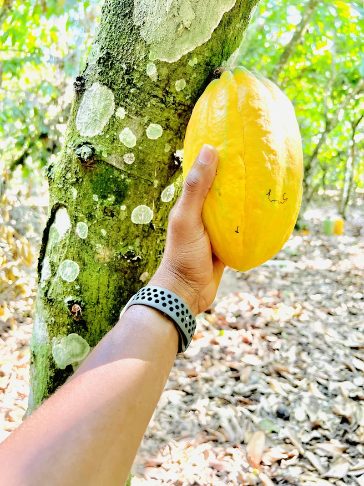
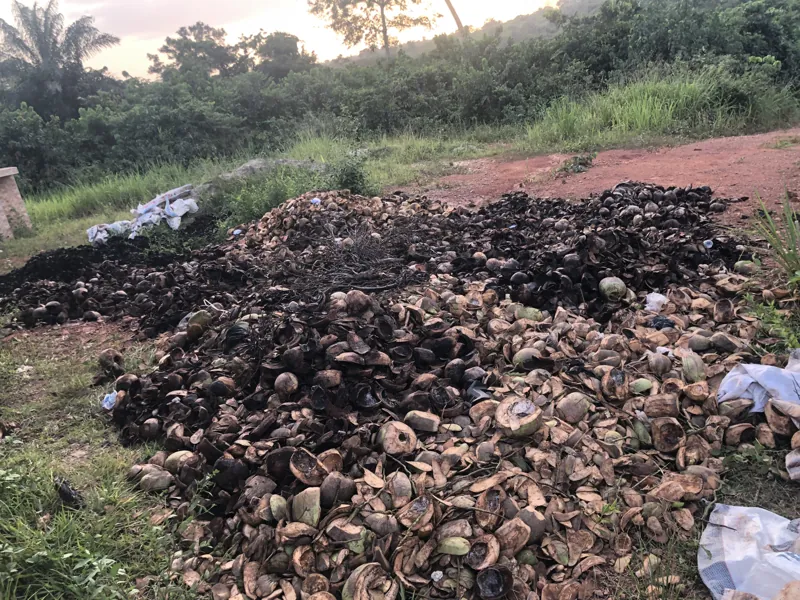
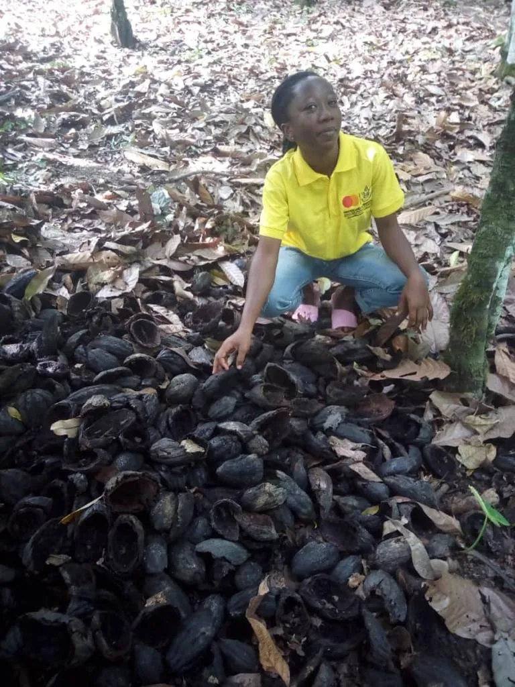
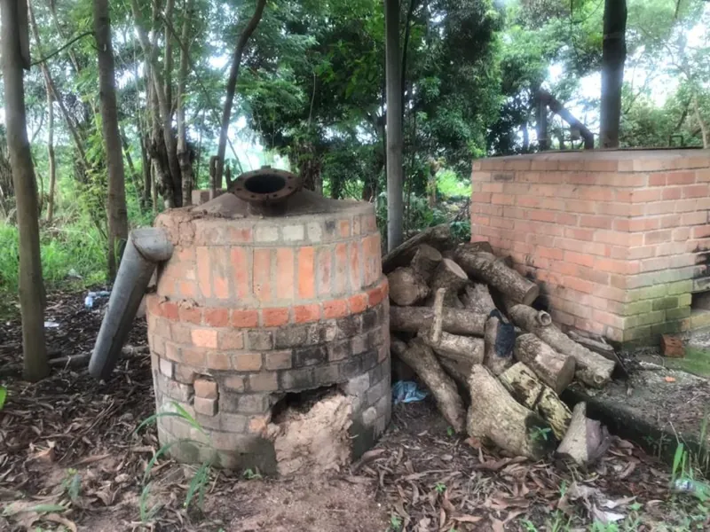
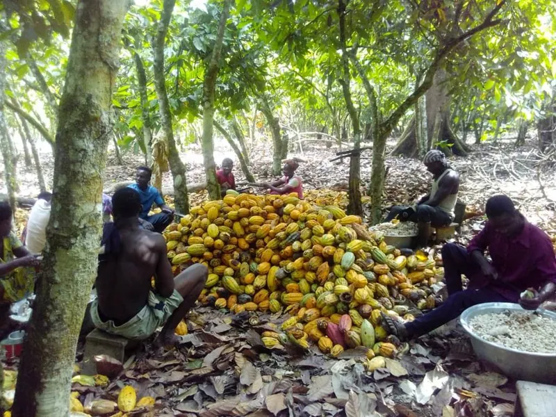
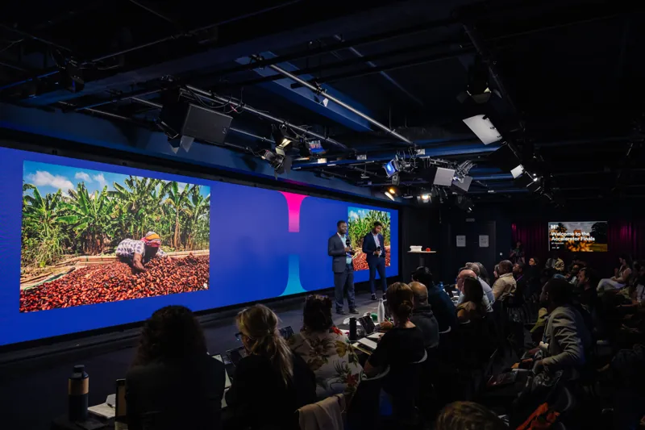

Amblyopia and strabismus
Measuring how a weak eye is suppressed, to guide binocular treatment.
01Venture
We recover potassium carbonate and biochar from farm and forest waste. No mine. No electrolysis.

ModelThe line
Skid-mounted and built mostly from standard hardware. Heat, water and CO2 are recovered inside the line. Provisional patent filed in 2026.
FieldOn the ground in Ghana






02Research
PhD research at the Cole Eye Institute, Cleveland Clinic, and the Louis Stokes Cleveland VA Medical Center.
Measuring how a weak eye is suppressed, to guide binocular treatment.
How stimulation changes eye alignment, search and depth, tested on and off.
Calibration and analysis for iPad-based eye tracking, toward screening outside the clinic.
PapersSelected publications
03Recognition


4
venture competitions won
04About

Prince and I grew up in cocoa-farming families. His family lost a 15-acre farm to a fire that started with burning waste.
That is the problem we work on. In the lab and in the company, my habit is the same: measure carefully, build what works, and stay close to the people it is for.